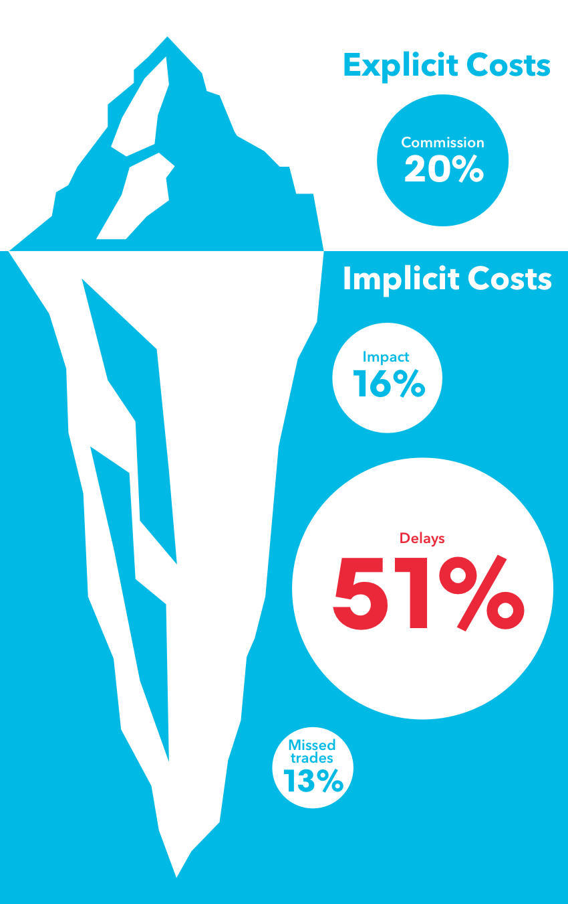

背景知识(业务)
为什么交易¶
为什么会有交易发生？ 从教科书上，最开始是你手头上有某样物品， 但是想要另外一种，于是乎你和有这个物品的人（或者中间商）进行交换，以得到你想要的物品。
现在意义上交易， 已经大大超过这样的范畴，在金融交易中尤为突出， 各种各样的人粉墨登场，奔着各种目的，
只有很少一部分是为了最原始的目的和需求：为了拥有更多、或者更少某样物品； 这里绝大部分人是为了逐利而来的(投资，投机)，还有部分人为了规避风险的。 交易场里基本有这样几类人：
生产者¶
顾名思义， 生产某种产品(有形无形)的人， 比如商品，小麦，石油， 或者货币/股票等生产者、持有者等。 期权， 虚拟币，甚至现在的鞋子，或者像文交所，邮票等一切能够标的的。
消费者¶
消费想获取如上物品的人
套利者¶
他们其实不想真买卖这产品，只是想低买高卖赚取差价的人，我们大部分都是这种类型的人！
做市商¶
The market maker brings together buyers and sellers.
He creates a market where it might be difficult for them to trade directly.
He doesn't require the produce himself, nor does he have a view on the direction of price change;
he is the middleman.
He makes the market more efficient and helps to ensure prices reflect supply and demand
做市商（Maker），又称为造市者，指金融市场上的一些独立的证券交易商，为投资者承担某一只证券的买进和卖出，买卖双方不需等待交易对手出现，只要有做市商出面承担交易对手方即可达成交易。可以说是一个非常非常非常重要的角色， 没有这个Maker就不可能有这个市场。就像买卖菜没有菜场，下面就没有办法玩了。 有很多场外的盘， 其实是自己做市的，想像菜场外面蹲点的小贩子（城管来了得跑）， 就好像我们国家是不允许*赌*博， 但是没有赌*场了吗？ 互联网是不可以玩彩票， 那一元购呢？ 合乎法律还是合乎情理，很多事情的界限没有明显的区分。
在美国纽约证券交易所市场称作“专家”（Specialist），在香港证券市场被称作“庄家”。做市商制度在香港称作“证券庄家”制度。
与“报价驱动”的做市商制度相对的是“指令驱动”的竞价交易制度，例如连续竞价交易制度和集合交易制度。
做市商制度的优点
- 强大的定价功能：做市商能够长期跟踪证券价格的变化，凭借专业知识对证券的市场公允价格作出判断，提供最有参考的报价。
- 增强市场的流动性：采用做市商制度以后，投资者可以在直接与做市商进行交易，不需要等待或者寻找对手方。
- 推动市场不熟悉的证券的推介，降低新股发行成本：投资新兴产业的股票往往需要普通投资者几乎不具备的专业知识，很难对股票进行准确的估价；做市商的双向报价为市场交易提供了市价的参考。
- 推动大宗交易的达成：做市商本身适合成为机构投资者进行大宗交易的交易对手。
如何交易¶
上文说道， 现在基本已经没有物物面对面交易了，大部分都电子化了， 比如以前股票都需要登记记名， 现在都换成一个数据库记录的修改了， 这也大大节约了费用； 这样的便捷， 也让你频繁地换手，交易商表示非常开心， 想象如果还需要拿个本子去登记下， 恐怕交易也就没有这么频繁了， 市场波动也就小了， 这个是后话， 但是这里的交易还没有达到你想像那么便捷， 不是你想买包烟那么随时，随心，随地。
现在大家进行交易主要通过下面几种方式
经纪人（Broker）¶
就是帮别人买卖的代理人、中间人、经纪人（或实体），其代理人收入是靠以买卖产生的佣金为收入， 最好理解就是我们的房产中介！ 在金融系统中， 这里很多时候是个人， 或者小的团体没有资格和做市商交易，所以需要一个中间的经纪人， 可能你钱太少， 信誉不够。
交易所（Exchange）¶
这个大家比较熟悉， 上证，深圳交易所， 纽约交易所，芝加哥，伦敦交易所等等
场外交易（OTC）¶
为什么叫场外， 这个和交易所场内相对应的， 场内交易限制比较多比如， 需要是交易所的会员，有固定时间， 固定的产品， 那么有的人想赌投资更方便的， 就选择场外了， 但是现在场外也不是法外之地， 更多的监管越来越严格， 比如金融危机后的 Dodd-Frank（《多德-弗兰克法案》）法案 等， 其实为我们IT团队带来了很多的项目， 需要感谢这位素未谋面的好同学。那么场外交易是不是就是不好呢？ 想像上面的例子， 菜场外的菜贩子，那天下班晚了，菜场关了，哎，外面贩子还在！
流动性，价格，杠杆¶
交易中需要时刻关注的三要素。
流动性¶
当市场上，买卖的人很活跃，可以成为流动性很好， 反之流动性差， 强流动性带来的好处：
- 更优价格
- 点差更小， 可以想像跌停，涨停其实是点差无限大，因为买、卖另外的一方不存在
- 产品信息披露比较多，热门产品消息比较多，传播比较多，噪音也许也更多，你追涨杀跌看看
- 随时买卖
流动性可以说是交易的本质， 产品么有好烂之分， 只有流动与否？ 没有流动性，一潭死水，就没有价格上面的好坏之分。 一个交易平台最怕是没有流动性了， 这意味着市场停滞了，没有了买卖，就没有手续费等等后续的利润可能。
价格¶
价格，虽然是日常接触最多的概念， 但是其实价格的形成是一套非常非常复杂的机制。
1. 交易所价格
交易所价格是最标准的价格， 或者说价格的源泉， 比方说招商银行（600036） 2017/10/25 10:25 价格26.49 是一个永远唯一的价格，交易所价格由下面参与者， 把自己愿意出的买、卖价格报上去聚合而成的。
2. 经纪人价格（或其他价格）
根据交易所的价格，外加自己的一些根据买卖家微调。
对于一些没有中心的交易所的产品价格如何判读，比如外汇, 其实各个盘的价格都不一样。但是整体的趋势是一致的。
杠杆¶
杠杆可以说即是天使也是魔鬼， 平时大家接触的 Spot trade(现货贸易/现货交易/即期交易), 比如买卖A股， 是没有杠杆的， 于是乎，如果你投资失利，其实还能剩点渣；
但是一旦加上杠杆（或融资融券）后， 你可能会血本无归，还背上一身债务(好像大部分都是!-_-!)；
当然你也可能一夜暴富。简单比方：100倍杠杆。 你有100块钱，你可以建一个价值10000块的仓位， 如果上涨1%， 其实你收获了 10000 * 1% = 100 块的利润， 也就是账目涨了100%； 但是如果下跌1%， 你已经亏得分文不剩，如果下跌2%呢， 你倒欠100块。 当然很多时候券商不会让你亏到这么多，因为很有可能你还不起，拍拍屁股走人了；
当到达警戒线附近，券商会打电话给你： 哥们你得补钱了， 要不就得给你清仓了。这也就是margin call， 其实在不明觉厉的情况下以各种名义增加杠杆进行你的投资，都是不太明智的。 在现阶段老百姓其实只有买卖房子可以加个3倍杠杠， 但是现在炒房子好也需要仔细斟酌下哦。
交易成本¶
表面上的交易成本很好理解， 就是佣金。 现在竞争非常激烈， 可能低到万五、万三的水平；
但是这个仅仅是整个交易成本里面占比最小的部分； 而且现在很多平台甚至推出 零佣金 交易， 然而这个是真的吗？
当然不完全是，否则他们喝西北风去？更多的隐形的成本： 比如点差、滑点、机会成本、 当然更重要是 时间成本！ 所有过程中的成本都会分摊到每一笔交易中， 券商每个席位的会员费， 人工，办公， 结算清算系统， 风险监控里面的花费等等。如果你融资融券（杠杆）， 还需要付出利息，隔夜费等等。
更详细可以对照下面可更直观
- 做市商到交易员之间的时间差
- 机会成本， 买、卖不掉
- 消息泄漏
- 信息不对称； 这个可能比想象中要严重多
- 滑点， 点差等
概述¶
三个女人一台戏； 有人的地方就有江湖； 有利益的地方就有交易，从大部分逐利者角度， 有波动就有赚头，当然你是刀口舐血,过了上顿没有下顿， 还是如巴菲特成为一代传奇，还得看你自己造化， 好在这不会讨论如何具体的投资理财赚钱！我们只讨论比较容易量化的技术相关的东西。
当今大部分交易系统都已经电子化了，还有么有电子化的吗？有！需要文件互相寄来传去的—可以想象这样比对的痛楚了，每个系统都有遗留的资产，
比如30年前的合约，那个时候也许传真才是最先进的呢！ 所以很多银行还保持这肉眼扫描、校验这些交易相关文件，
隔着屏幕你也许都可以感受到那扑面而来的酸爽。 电子化给投资带来了便捷，也带来诸多风险，
特别是算法自动化交易的参与，给整个系统带来诸多不稳定性，大家可以查阅一些由于计算机导致事件。 也许不远的将来都将是一群机器在角逐， 这个当然是后话， 基本的套路、规律还是最初的， 本质也许从人类有交易历史开始没有太大变化。